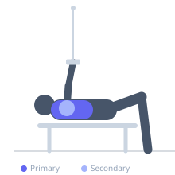

Exercise guide / Ring Flye
Ring Flye
The ring flye is an advanced chest isolation exercise performed on gymnastic rings. With arms extended to the sides and elbows slightly bent, the athlete drives the hands together in a wide arc, creating intense pectoral stretch and contraction. The unstable nature of the rings demands significantly greater rotator cuff and serratus anterior activation compared to cable or dumbbell flyes.
Primary muscles
pectoralis major sternal
pectoralis major clavicular
Secondary muscles
deltoid anterior
Stabilizers
infraspinatus
supraspinatus
subscapularis
pectoralis minor
Equipment
Gymnastic Rings


Starting position
- Adjust rings to approximately chest height when standing. Grip one ring in each hand, lean forward, and extend arms out to the sides with a slight bend in the elbows. Body is inclined forward, weight on the balls of the feet.
Setup
- Set gymnastic rings at a height where your body angle creates appropriate difficulty — lower rings make the exercise harder. Ensure rings are secured and level.
Steps
- Step 1: Begin with arms extended out to the sides, elbows slightly bent, body leaning forward at an angle determined by your strength level.
- Step 2: Drive both hands together in a wide arc, maintaining the same elbow angle throughout — do not bend the elbows further.
- Step 3: Squeeze the pectorals at the peak, hands meeting in front of your chest.
- Step 4: Slowly reverse the motion, allowing the arms to open wide and stretch the chest under control.
Coaching cues
- Hug a barrel — maintain the same arm shape throughout
- Keep your chest proud and shoulders packed down away from ears
Breathing
- Exhale as you bring the rings together. Inhale during the controlled lowering phase.
Range of motion
- Open arms as wide as comfortable without shoulder pain, aiming for a full pectoral stretch. Bring hands together at mid-chest level at the top.
Tempo
- 2-0-2-1 (2s open, no pause, 2s close, 1s squeeze)
Common mistakes
- Bending the elbows excessively, turning it into a push-up
- Losing body tension and sagging at the hips
- Allowing rings to rotate outward at the top position
Safety
- This exercise places significant stress on the shoulder joint — ensure adequate rotator cuff strength before attempting
- Start with a steeper body angle (more upright) to reduce difficulty and progress gradually
- Never lock out elbows under load on rings
Training
- strength: 5–8 reps
- hypertrophy: 8–15 reps
- strength: 3–4 sets
- hypertrophy: 3–4 sets
- Rest: {'strength': 180, 'hypertrophy': 90}